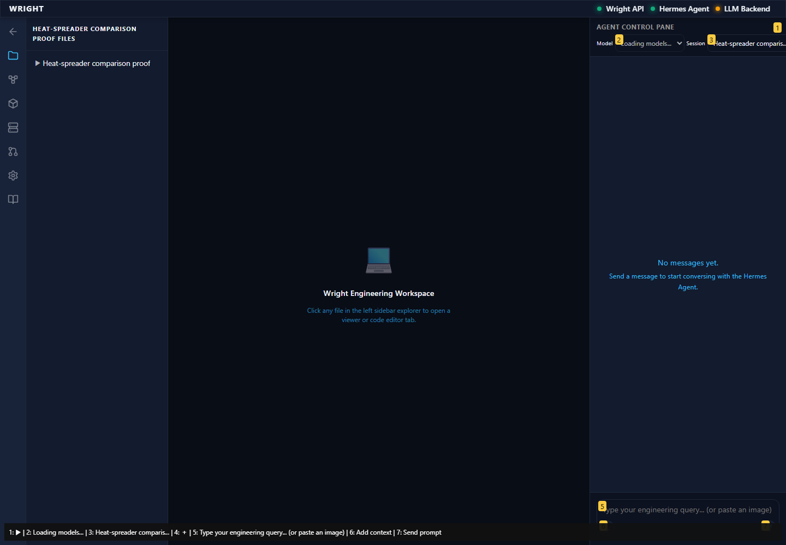
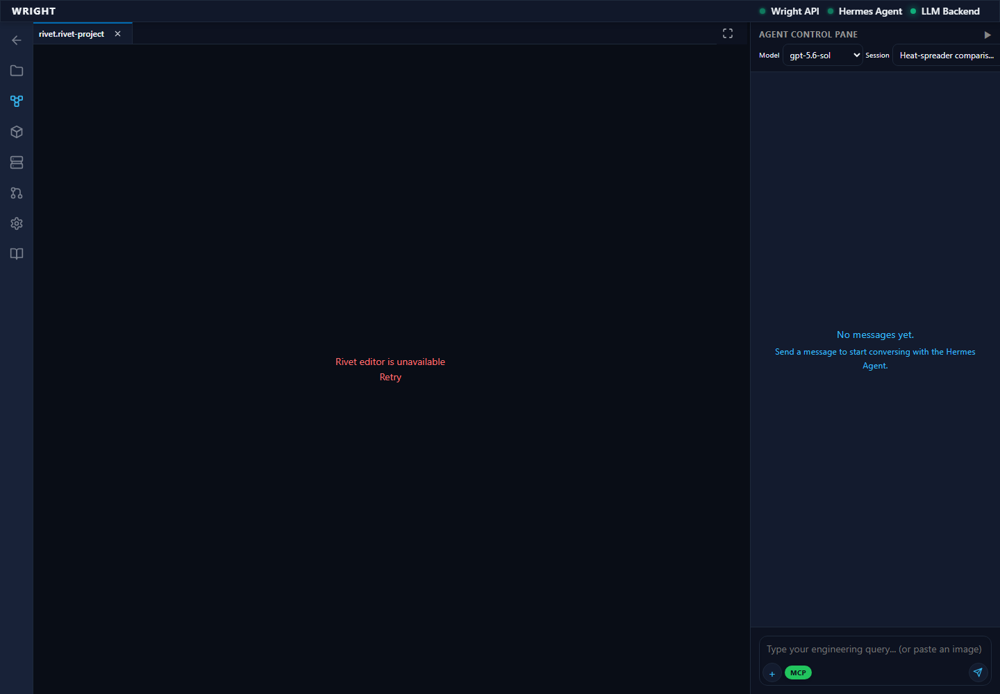
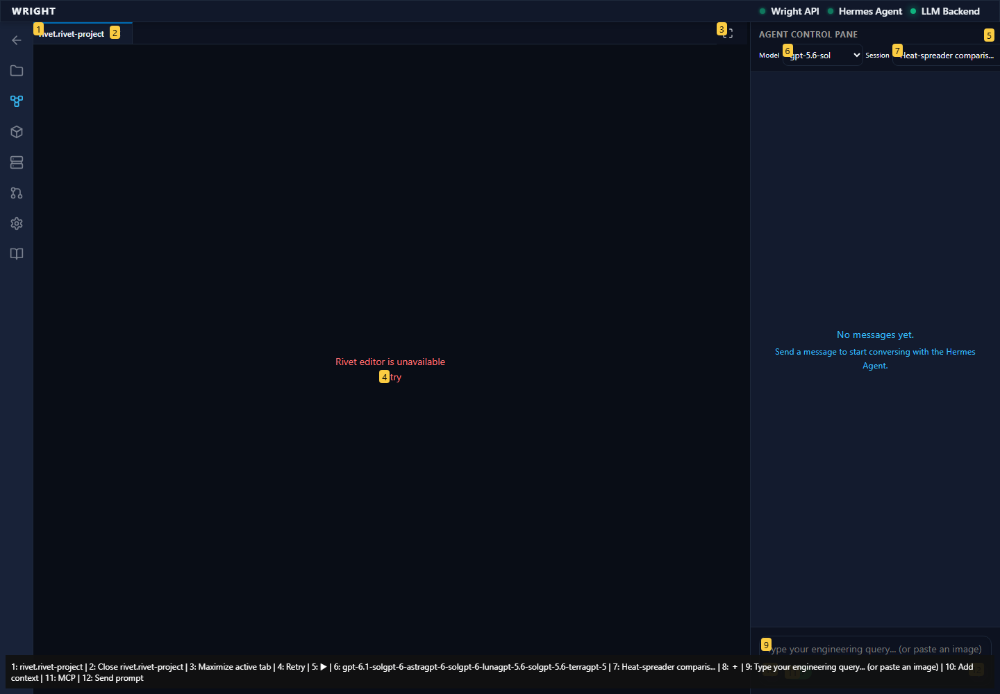

Workspace offers Workflows · pass
Entered the normal authenticated workspace.
Expected: The workspace loads and offers Workflows.
Actual: Normal workspace and Workflows control visible.
raw
annotated 
Normal Wright workspace and actual isolated engineering run. No mocked routes or physical action.
Status: blocked
Entered the normal authenticated workspace.
Expected: The workspace loads and offers Workflows.
Actual: Normal workspace and Workflows control visible.
raw
annotated 
The normal workspace entry did not meet the expected state.
Expected: Workspace and established editor available.
Actual: expect(locator).toBeVisible() failed Locator: getByTestId('workflow-file-menu') Expected: visible Timeout: 45000ms Error: element(s) not found Call log: - Expect "to.be.visible" with timeout 45000ms - waiting for getByTestId('workflow-file-menu')
raw 
annotated 